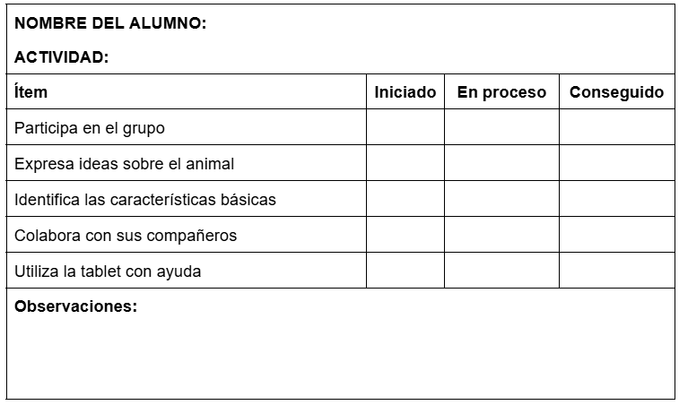

Instrumentos de evaluación
Para evaluar esta Situación de Aprendizaje, se utilizarán diferentes instrumentos con el objetivo de recoger información variada del proceso de aprendizaje del alumnado. Se combinarán instrumentos de observación directa, producciones del alumnado y herramientas digitales, favoreciendo así una evaluación más completa y ajustada a la realidad del aula.
INSTRUMENTO 1. Rúbrica de observación directa (docente)
Este instrumento se utiliza durante el desarrollo de las actividades 2, 3 y 4 (investigación, clasificación y creación del contenido). Consiste en una rúbrica sencilla que se incluye en el diario de clase, para valorar el trabajo y participación en el grupo, la expresión oral, la comprensión de los contenidos y el uso de las herramientas digitales por parte del alumnado.

INSTRUMENTO 2. Diana de autoevaluación (alumnado)
La diana de autoevaluación se utiliza como actividad de cierre para favorecer una reflexión sencilla por parte del alumnado sobre su participación, lo aprendido, el trabajo en grupo y su grado de satisfacción con la situación de aprendizaje. Se trata de una herramienta visual, adecuada a estas edades, que facilita la expresión de su percepción de forma accesible.
Para garantizar resultados más ajustados, se acompaña de preguntas breves y adaptadas que ayudan a comprender mejor lo que se les pide, fomentando una reflexión guiada sobre su propia implicación. Este instrumento no solo aporta información sobre el aprendizaje, sino también sobre la motivación y la experiencia del alumnado, lo que permite orientar y mejorar futuras propuestas educativas.

INSTRUMENTO 3. Lista de cotejo del producto final (Padlet)
La lista de cotejo se utiliza para valorar el producto final de la situación de aprendizaje, es decir, el mural digital elaborado en Padlet. Este instrumento permite comprobar de forma sencilla si el alumnado identifica el animal trabajado, reconoce sus características básicas y participa en la creación del contenido junto a su grupo.
La recogida de información se realiza durante la elaboración del Padlet y en el momento de cierre del proceso, teniendo en cuenta tanto el resultado final como la implicación del alumnado en las diferentes tareas. Para ello, se emplea una tabla con indicadores claros y respuestas simples (siempre, a veces, nunca) que facilitan el registro de la información de manera rápida y objetiva.
Los criterios a evaluar son:
- Reconoce y nombra el animal
- Explica de forma sencilla sus características
- Participa en la elaboración del dibujo
- Participa en la grabación del audio
- Se expresa de manera comprensible y emplea el vocabulario adecuado
Enlace a la tarea 8.1: https://docs.google.com/document/d/1VZ2nLfRrg-emDy7PGIIhkEGsWvQ56AlPneBaBzswRok/edit?usp=sharing